Project ICP Open Access Research Tools
| Garbach K. and Morgon, G.P. (2016). Quick start guide to the Anonymizer tool. Use this tool to make and maintain anonymous codes for grower survey responses. Access the Anonymizer code via Github. | |
|
Garbach K. and Morgon, G.P. (2016). Quick start guide to the Linker tool. Use this tool to identify links among growers and between growers and organizations based on grower survey responses. Access the Linker code via Github. Learn more about the Anonymizer and Linker tools via this blog post. |
Project ICP Research Publications
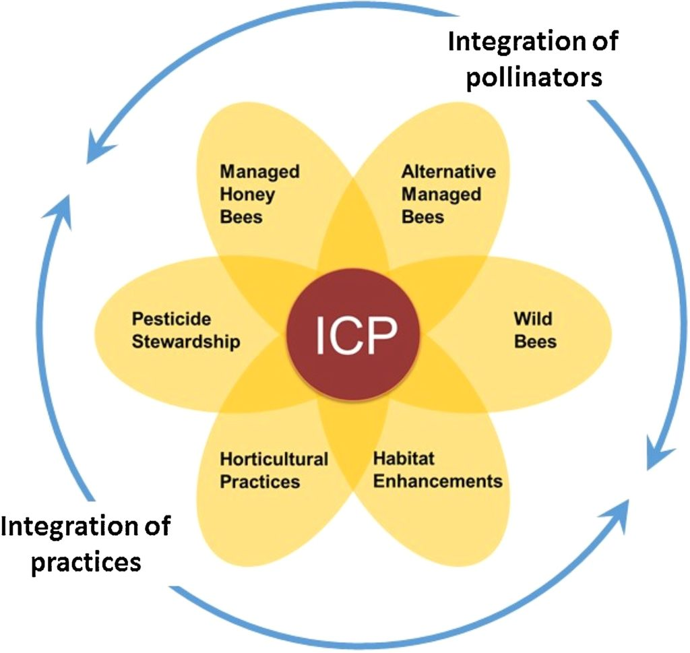 |
Isaacs R., Williams N., Ellis J., Pitts-Singer T.L., Bommarcoe R., and Vaughan M. (2017) Integrated Crop Pollination: combining strategies to ensure stable and sustainable yields of pollination-dependent crops. Basic and Applied Ecology. doi: 10.1016/j.baae.2017.07.003 |
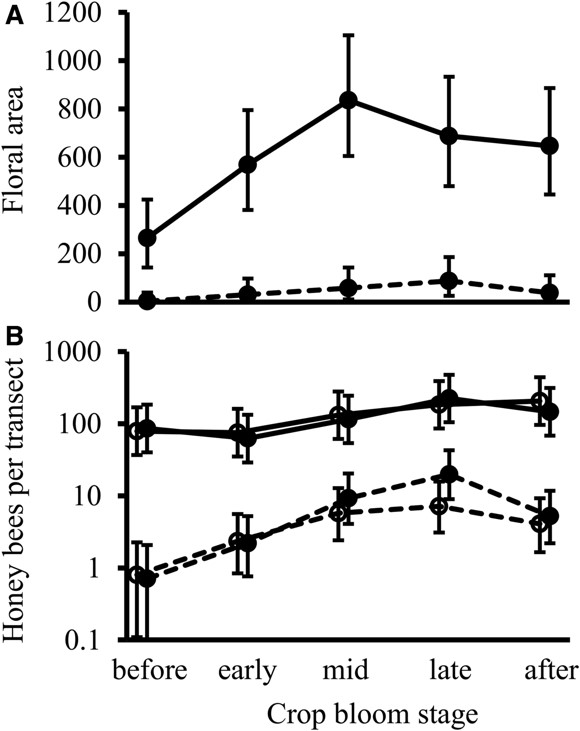 |
Lundin, O., Ward, K.L., Artz D.R., Boyle N.K., Pitts-Singer T.L., and Williams N.M. (2017) Wildflower Plantings Do Not Compete With Neighboring Almond Orchards for Pollinator Visits. Environmental Entomology. 46 (3): 559-564 |
| 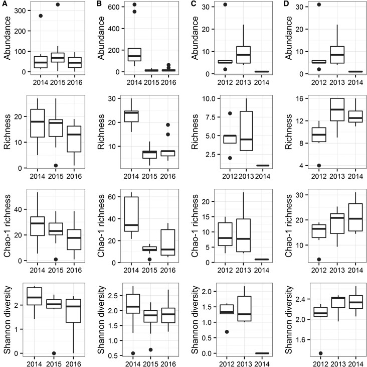 |
|
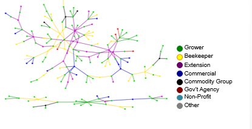 |
Garbach K. and Morgon, G.P. (2016) Useful utilities for Social Science Researchers: Anonymization, Reconciliation, and Node Identification White Paper #ICP-2016.1R |
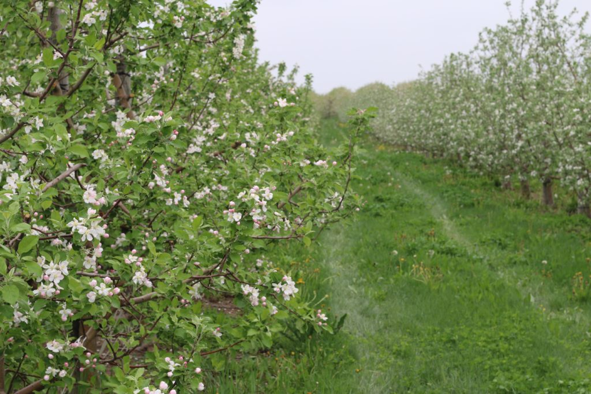 |
Kammerer M.A., Biddinger, D.J., Joshi, N.K., Rajotte, E.G., Mortensen, D.A. 2016. Modeling local spatial patterns of wild bee diversity in Pennsylvania apple orchards. Landscape Ecology. doi:10.1007/s10980-016-0416-4 |
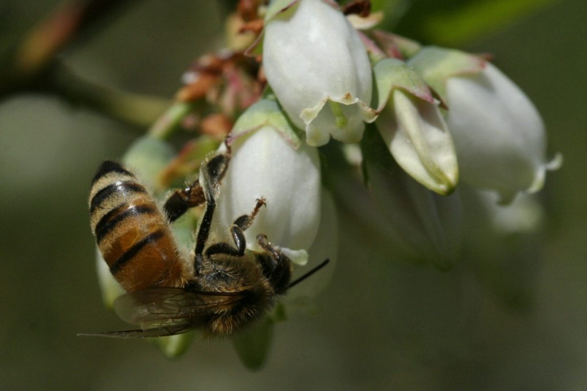 |
Gibbs J., Elle E., Bobiwash K., Haapalainen T., Isaacs R. 2016. Contrasting Pollinators and Pollination in Native and Non-Native Regions of Highbush Blueberry Production. PLoS ONE 11(7): e0158937. doi:10.1371/journal.pone.0158937 |
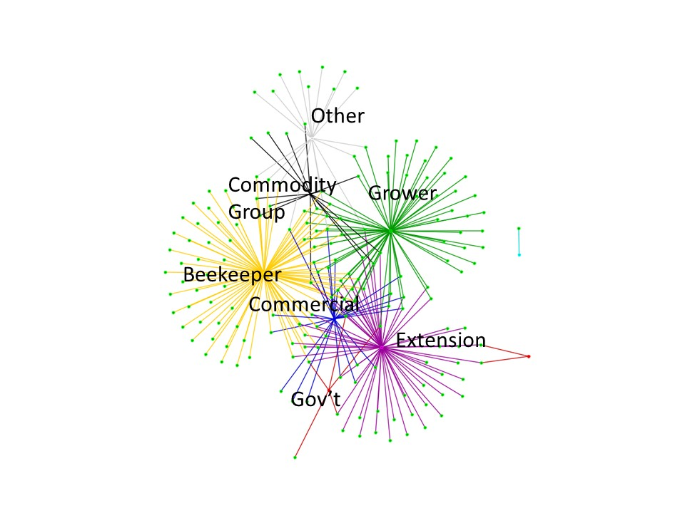 |
Garbach K. and Morgon, G.P. (2016) Grower networks support adoption of innovations in pollination management: the roles of social learning, technical learning, and personal experience. ICP White Paper: ICP-MIBB2016.1R. |
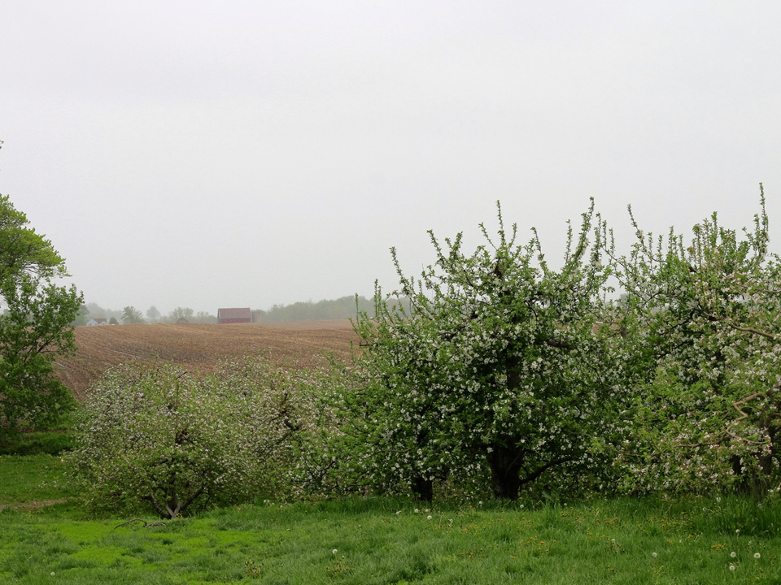 |
Joshi N., Otieno, M., Rajotte, E.G., Fleischer S.J., Biddinger, D.J.. (2016) Proximity to woodland and landscape structure drives pollinator visitation in apple orchard ecosystem. Frontiers in Ecology and Evolution, 4(38): 1–9. |
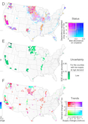 |
Koh I., Lonsdorf E.V., Williams N., Brittain C., Isaacs R., Gibbs J., Ricketts, T.H. (2015) Modeling the status, trends and impacts of wild bee abundance in the United States. Proceedings of the National Academy of Sciences, 113(1): 140–145. See related ICP blog post and policy brief. |
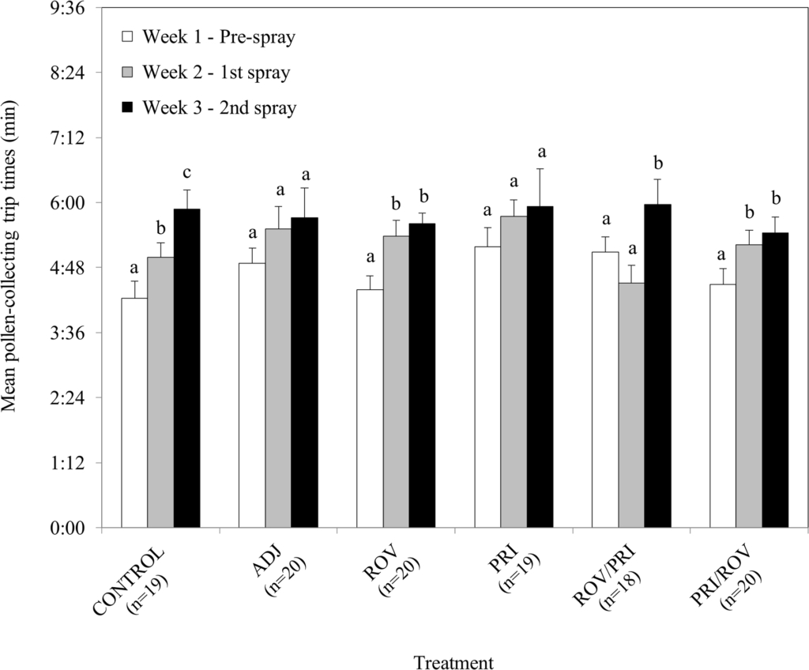 |
Artz D.R. and Pitts-Singer T.L. (2015) Effects of Fungicide and Adjuvant Sprays on Nesting Behavior in Two Managed Solitary Bees, Osmia lignaria and Megachile rotundata. PLoS ONE 10(8): e0135688. doi:10.1371/journal.pone.0135688 |
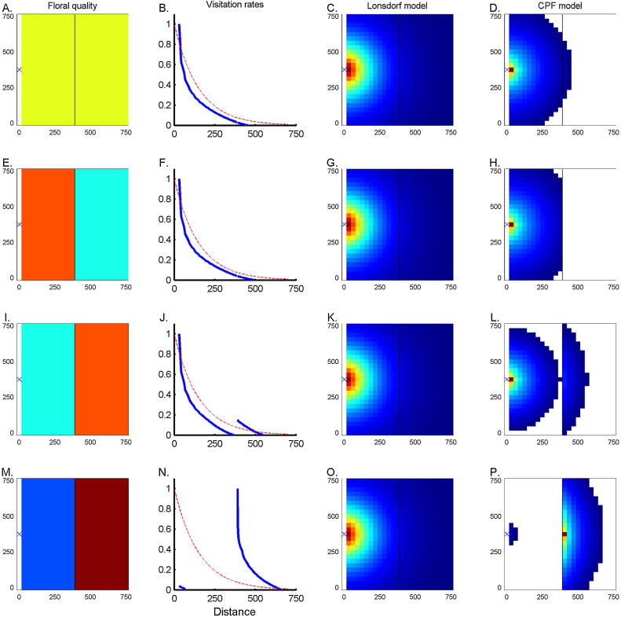 |
Olsson O., Bolin B., Smith H.G., Lonsdorf, E.V. (2015) Modeling pollinating bee visitation rates in heterogeneous landscapes from foraging theory. Ecological Modelling, 316:133-143 |
Related Publications by Project ICP Researchers
Project ICP team members (past and present) are listed in bold.
Artz, D.R. and Pitts-Singer, T.L. (2015) Effects of fungicide and adjuvant sprays on nesting behavior in two managed solitary bees, Osmia lignaria and Megachile rotundata. PLoS ONE 10(8): e0135688. doi:10.1371/journal.pone.0135688
Benjamin, F., and R. Winfree. (2014) Lack of pollinators limits fruit production in commercial blueberry (Vaccinium corymbosum). Environmental Entomology 43: 1574-1583
Blitzer, E.J., Gibbs, J., Park, M.G. & Danforth, B.N. (2016) Pollination services for apple are dependent on diverse wild bee communities. Agriculture, Ecosystems and Environment, 221(1): 1-7.
Forrest, J.R.K., R.W. Thorp, C. Kremen, and N.M. Williams. (2015) Contrasting patterns in species and functional-trait diversity of bees in an agricultural landscape, Journal of Applied Ecology 52: 706-715
Garibaldi, L. A., I. Bartomeus, R. Bommarco, A. M. Klein, S. A. Cunningham, M. A. Aizen, V. Boreux, M. P. D. Garratt, L. G. Carvalheiro, C. Kremen, C. L. Morales, C. Schüepp, N. P. Chacoff, B. M. Freitas, V. Gagic, A. Holzschuh, B. K. Klatt, K. M. Krewenka, S. Krishnan, M. M. Mayfield, I. Motzke, M. Otieno, J. Petersen, S. G. Potts, T. H. Ricketts, M. Rundlöf, A. Sciligo, P. A. Sinu, I. Steffan-Dewenter, H. Taki, T. Tscharntke, C. H. Vergara, B. F. Viana, and M. Woyciechowski. (2015) Trait matching of flower visitors and crops predicts fruit set better than trait diversity. Journal of Applied Ecology 52(6): 1436-1444. [Selected as Editor’s Choice]
Garibaldi, L A, L G Carvalheiro, S D Leonhardt, M A Aizen, B R Blaauw, R Isaacs, M Kuhlmann, D Kleijn, A M Klein, C Kremen, L Morandin, J Scheper, and R Winfree. (2014) From research to action: practices to enhance crop yield through wild pollinators. Frontiers in Ecology and the Environment 12: 439-447 Cover article
Harmon-Threatt, A.N. and C. Kremen. (2015) Bumble bees selectively use native and exotic species to maintain nutritional intake across highly variable and invaded local floral resource pools. Ecological Entomology, Doi: 10.1111/een.12211.
Klein, A-M., S. D. Hendrix, Y. Clough, A. Scofield, and C. Kremen. (2015) Interacting effects of pollination, water, and nutrients on fruit tree performance. Plant Biology, 17: 201-208.
Kleijn, D., R. Winfree, I. Bartomeus, L. G. Carvalheiro, M. Henry, R. Isaacs, A. M. Klein, C. Kremen, L. K. M’Gonigle, R. Rader, T. H. Ricketts, N. M. Williams, N. Lee Adamson, J. S. Ascher, A. Báldi, P. Batáry, F. Benjamin, J. C. Biesmeijer, E. J. Blitzer, R. Bommarco, M. R. Brand, V. Bretagnolle, L. Button, D. P. Cariveau, R. Chifflet, J. F. Colville, B. N. Danforth, E. Elle, M. P. D. Garratt, F. Herzog, A. Holzschuh, B. G. Howlett, F. Jauker, S. Jha, E. Knop, K.M. Krewenka, V. Le Féon, Y. Mandelik, E. A. May, M. G. Park, G. Pisanty, M. Reemer, V. Riedinger, O. Rollin, M. Rundlöf, H. S. Sardiñas, J. Scheper, A. R. Sciligo, H. G. Smith, I. Steffan-Dewenter, R. Thorp, T. Tscharntke, J. Verhulst, B. F. Viana, B. E. Vaissière, R. Veldtman, K.L. Ward, C. Westphal, & S. G. Potts. (2015) Delivery of crop pollination services is an insufficient argument for wild pollinator conservation. Nature Communications, 6, 7414-7422.
Kremen, C, and L. K. M’Gonigle. (2015) Small-scale restoration in intensive agricultural landscapes supports more specialized and less mobile pollinator species. Journal of Applied Ecology, 52: 602-610. [Selected as Editor’s Choice]
Mallinger, R.E., Gibbs. J. & Gratton, C. (2016) Diverse landscapes have a higher abundance and species richness of spring wild bees by providing complementary floral resources over bees’ foraging periods. Landscape Ecology [early view] DOI: 10.1007/s10980-015-0332-z
M’Gonigle, L. K., L. Ponisio, K. Cutler, and C. Kremen. (2015) Habitat restoration promotes pollinator persistence and colonization in intensively-managed agriculture. Ecological Applications, 25:1557–1565.
Park M.G., Blitzer E.J., Gibbs J., Losey J.E., Danforth, B.N. (2015) Negative effects of pesticides on wild bee communities can be buffered by landscape context. Proceedings of the Royal Society B., 282 (1809), DOI: http://dx.doi.org/10.1098/rspb.2015.0299
Ponisio, L., L.K M’Gonigle and C. Kremen. (2015) On-farm habitat restoration counters biotic homogenization in intensively-managed agriculture. Global Change Biology, 22(2): 704-715. DOI: 10.1111/gcb.13117
Rader R., Bartomeus I., Garibaldi L. A, Garratt M. P. D., Howlett B. G., Winfree R., Cunningham S. A., Mayfield M. M., Arthur A. D., Andersson G. K. S., Bommarco R., Brittain C., Carvalheiro L. G., Chacoff N. P., Entling M. H., Foully B., Freitas B. M., Gemmill-Herren B., Ghazoul J., Griffin S. R., Gross C. L., Herbertsson L., Herzog F., Hipólito J., Jaggar S., Jauker F., Klein A.-M., Kleijn D., Krishnan S., Lemos C. Q., Lindström S. A. M., Mandelik Y., Monteiro V. M., Nelson W., Nilsson L., Pattemore D. E., de O. Pereira N., Pisanty G., Potts S. G., Reemer M., Rundlöf M., Sheffield C. S., Scheper J., Schüepp C., Smith H. G., Stanley D. A., Stout J. C., Szentgyörgyi H., Taki H., Vergara C. H., Viana B. F., Woyciechowski M. (2016) Non-bee insects are important contributors to global crop pollination. Proceedings of the National Academy of Sciences. 113, (1), 146-151.
Russo L., Park M.G., Gibbs J., Danforth, B.N. (2015) The challenge of accurately documenting bee species richness in agroecosystems: bee diversity in eastern apple orchards. Ecology and Evolution, 5(17), 3531–3540. DOI: http://dx.doi.org/10.1002/ece3.1582
Sardinas, H.S., and C. Kremen. (2015) Pollination services from field-scale agricultural diversification may be context-dependent. Agriculture, Ecosystems, and Environment, 207: 17-25.
Sardinas, H. S., K. Tom, L. C. Ponisio, A. Rominger, and C. Kremen. (2015) Sunflower (Helianthus annuus) pollination in California’s Central Valley is limited by native bee nest site location. Ecological Applications. doi: 10.1890/15-0033.1
Williams, N.M., K.L. Ward, N. Pope, R. Isaacs, J. Wilson, E.A. May, J. Ellis, J. Daniels, A. Pence, K. Ullmann, and J. Peters. (2015) Native wildflower plantings support wild bee abundance and diversity in agricultural landscapes across the United States. Ecological Applications, 25(8): 2119-2131.
Winfree, R., J. W. Fox, N. M. Williams, J. R. Reilly, and D. P. Cariveau. (2015) Abundance of common species, not species richness, drives delivery of a real-world ecosystem service. Ecology Letters, 18(7): 626-635. doi: 10.1111/ele.12424